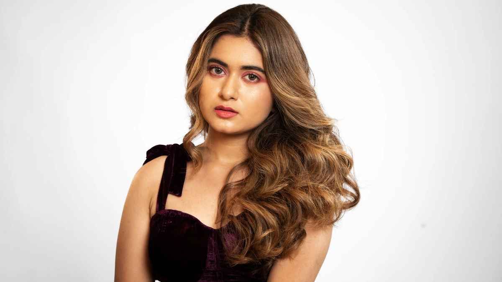

Choosing the right fringe style can change the overall appearance of your hairstyle by adding softness, framing your facial features, and creating a fresh look. Curtain bangs and wispy bangs are two popular options for people who want to experiment with fringe without committing to a heavy, full fringe. However, they differ in length, texture, styling, and the way they frame the face.
Curtain bangs create a soft, parted frame around the face, while wispy bangs offer a lightweight, delicate fringe across the forehead. The right choice depends on your face shape, hair texture, preferred hairstyle, and daily styling routine.
Curtain bangs are a fringe style that is typically parted in the middle or slightly off-centre. The hair gradually becomes longer towards the sides, creating a curtain-like effect that frames the face.
This style blends naturally into the rest of the haircut and works with different hair lengths, including short, medium, and long hairstyles.
Key characteristics of curtain bangs include:
Wispy bangs are a lightweight fringe created using thin, finely separated sections of hair. Unlike thick or blunt bangs, they allow some forehead visibility, creating a softer and more delicate appearance.
They can be cut straight across or slightly curved, depending on the desired hairstyle and facial features.
Key characteristics of wispy bangs include:
Although both styles create a soft appearance, their placement and overall finish are different.
| Feature | Curtain Bangs | Wispy Bangs |
|---|---|---|
| Parting | Usually centre or off-centre | Usually spread across forehead |
| Length | Shorter in the centre, longer at sides | Usually shorter and more consistent |
| Thickness | Medium or customised density | Lightweight and thin |
| Forehead coverage | Generally less coverage | Partial coverage |
| Face framing | Focuses on sides of the face | Focuses on forehead and upper face |
| Styling | Often styled away from the face | Usually styled forward or softly separated |
| Overall look | Relaxed and face-framing | Delicate and effortless |
Both styles can be customised according to hair length, density, and personal preferences.
Your face shape can help determine which fringe style creates your preferred appearance. However, hair texture, facial proportions, and individual styling preferences also matter.
Curtain bangs can complement a round face by creating vertical lines and drawing attention towards the cheekbones. Longer side sections can help create a more elongated visual effect.
Wispy bangs can also work when kept lightweight and slightly textured rather than cut into a dense, straight fringe.
Oval face shapes can generally accommodate both curtain and wispy bangs.
Curtain bangs add movement around the cheekbones, while wispy bangs introduce a softer appearance across the forehead.
Curtain bangs with soft, longer sides can help balance prominent jawline features.
Wispy bangs with feathered edges can also soften the appearance of a broader forehead and angular facial features.
Curtain bangs can create balance by adding softness around the cheekbones and jawline.
Wispy bangs are another option if you want to introduce a light fringe without creating too much visual weight around the forehead.
Wispy bangs can help visually reduce the appearance of forehead length by adding coverage across the upper face.
Curtain bangs can also work when cut with enough fullness and suitable proportions to complement the face.
Before selecting a fringe style, consider the following factors:
Bangs require regular maintenance because even small changes in length can affect their appearance.
Follow these tips to keep your fringe looking fresh:
Choosing the right fringe involves more than selecting a reference hairstyle. Your face shape, hair texture, density, and existing haircut all influence how the final result will look.
At Frenyz Salon in Vadodara, clients can explore customised haircut and styling services based on their individual preferences.
Whether you prefer the soft face-framing effect of curtain bangs or the delicate appearance of wispy bangs, a professional stylist can help determine the appropriate length, layering, and texture for your hair.
Before getting your fringe cut, discuss your preferred style, daily maintenance routine, and hairstyle references during your consultation.
Curtain bangs and wispy bangs are both versatile fringe styles, but they create different effects. Curtain bangs offer a parted, face-framing appearance, while wispy bangs provide a lightweight fringe with partial forehead coverage.
The best option depends on your facial proportions, hair texture, density, and preferred styling routine. A professional consultation can help you choose a fringe that complements your features and blends naturally with your haircut.
Yes, curtain bangs can work with thin hair when cut with suitable layering and density. Keeping the fringe lightweight can help maintain natural movement without removing too much volume from the remaining hair.
Wispy bangs may need light daily styling to maintain their shape and separation. A small round brush and a low-heat blow-dryer can help create a neat finish without making the fringe look too heavy.
Yes, curtain bangs can be reshaped into wispy bangs by adjusting their length, thickness, and texture. A stylist can assess the existing fringe and determine how much hair needs to be trimmed or repositioned.